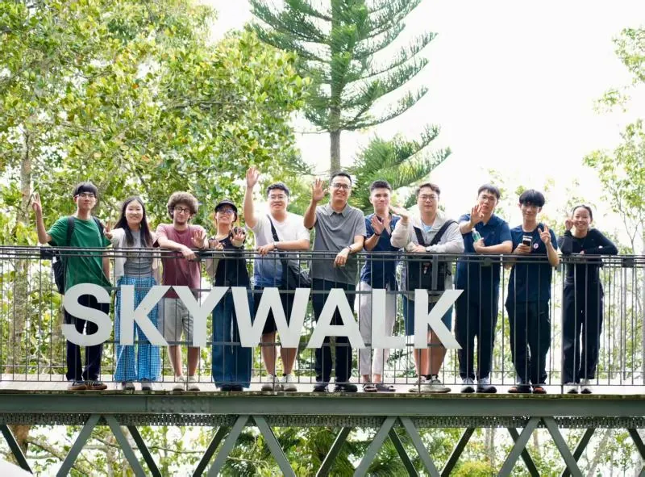
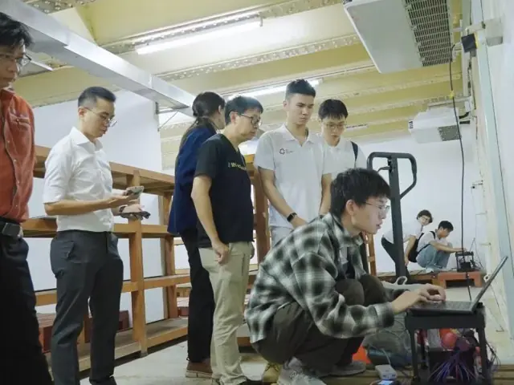
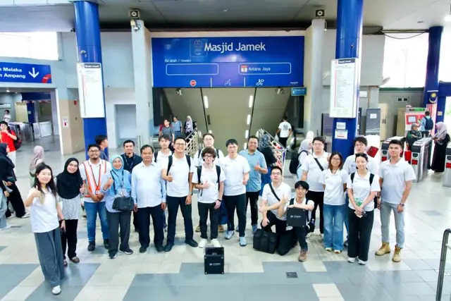
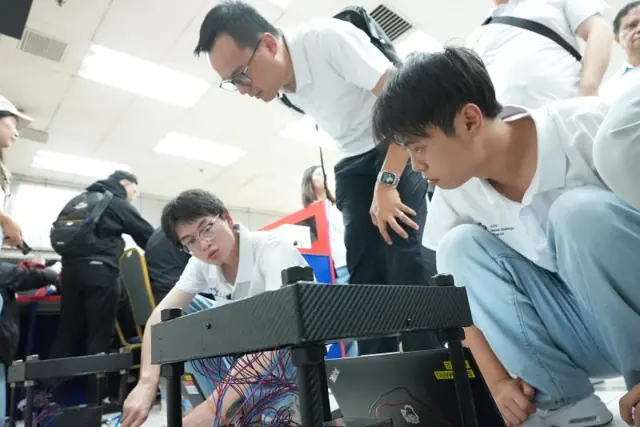
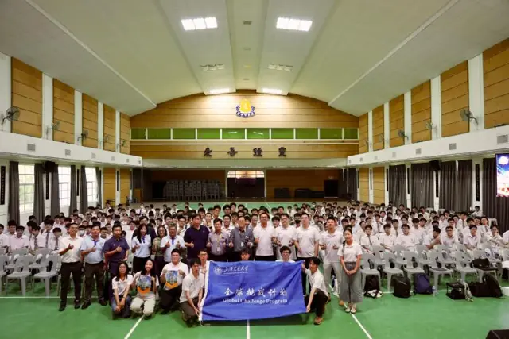
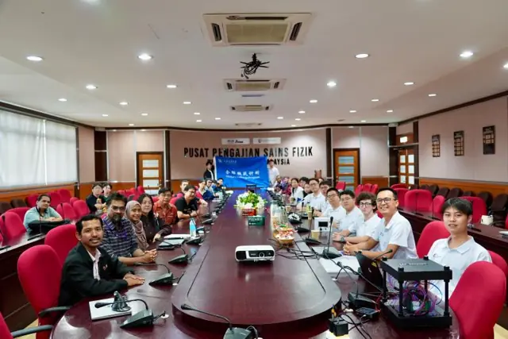
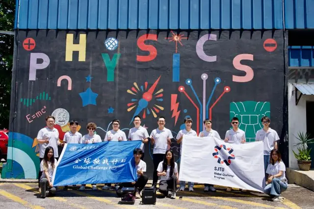
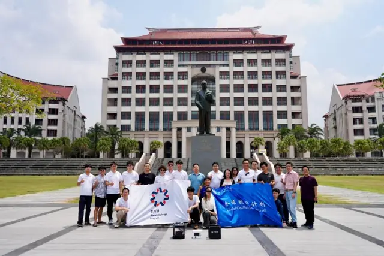
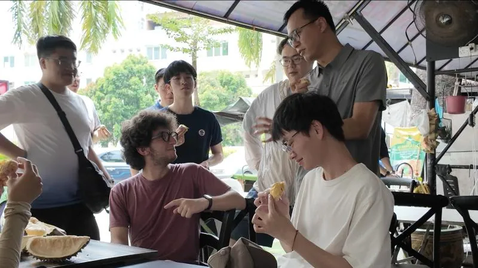

From 4 to 11 August 2026, a team from our group travelled across Peninsular Malaysia under the SJTU Global Challenge Program 2026 with the project “Muon imaging for non-destructive testing: a cross-border geological survey”. Led by Kim Siang Khaw, the team of 11 students from six SJTU schools, including TDLI and the School of Physics and Astronomy, visited Penang, Ipoh, Kuala Lumpur, Malacca and Johor. It was the first time the group’s portable muon detectors were taken abroad.


Much of the Malay Peninsula sits on karst and limestone, where underground cavities and soil loss can lead to road collapses. Muography offers a way to look inside such structures without drilling: by comparing the cosmic-ray muon flux with and without an overlying object, the density distribution inside can be reconstructed — a “CT scan” of the ground. The detectors used on the trip derive from technology developed for the Muon g-2 and muEDM experiments and were re-engineered by the TDLI Muon Tech Lab for outdoor use: portable, easy to assemble, and resistant to heat, humidity and dust.
The team carried out three field campaigns:
- Air-raid shelter, Universiti Sains Malaysia (USM) — the first demonstration measurement in a real building in Malaysia, used to test detector deployment, data taking and site conditions.
- Perak Cave, Ipoh — measurements in a limestone cave with karst cavities and rockfall risk, aiming to provide quantitative data on rock stability for hazard prevention and visitor safety.
- Around Masjid Jamek station, Kuala Lumpur — preliminary tests and a site survey to look for potential voids and loose ground, near the area of the Jalan Masjid India road collapse, with support from Kuala Lumpur City Hall (DBKL) and Prasarana.






Along the way, team members gave talks and detector demonstrations on cosmic-ray physics, muon detection, data acquisition and image analysis at USM, Universiti Malaya (UM), Xiamen University Malaysia (XMUM) and Universiti Teknologi Malaysia (UTM), where representatives of the Atomic Energy Licensing Board and a highway company also joined the discussions. Yonghao Zeng, Yinghe Wang, Guan Ming Wong, Peiyao Li, Zhanxu Hao, Mehdi Kaci and Xiyan Yi presented, and at Chung Ling High School in Penang — Kim Siang’s alma mater — the team gave a popular-science lecture, with Qee Enn Tai and Yifei Li sharing their experiences of studying abroad and of moving from the classroom to research.








The data collected will now be analysed for density reconstruction and structural imaging. The trip also opened new collaborations: preliminary work with Prasarana on metro-tunnel safety; an initial agreement with XMUM and China Communications Construction Company (Malaysia) on applications in local infrastructure; agreement with USM and UTM on joint research; and interest from the UM Department of Physics in joint student training with TDLI. Between campaigns, the team also explored Penang’s heritage streets, the caves and karst hills of Ipoh and the Strait of Malacca — and, of course, durian and Nyonya food.


Report (in Chinese): SJTU News